1과목: 유통물류일반
1. 특정 업무를 수행하는 데 소요되는 비용이 가장 낮은 유통경로기관이 해당 업무를 수행하는 방향으로 유통경로의 구조가 결정된다고 설명하는 유통경로구조이론으로 가장 옳은 것은?
2. 아래 글상자의 자료를 토대로 계산한 경제적주문량(EOQ)이 200이라면 연간 단위당 재고유지 비용으로 옳은 것은?
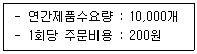
3. 운송과 관련한 설명 중 가장 옳지 않은 것은?
4. 자본잉여금의 종류로 옳지 않은 것은?
5. 기업이 e-공급망 관리(e-SCM)를 통해 얻을 수 있는 효과로 가장 옳지 않은 것은?
6. 서비스 유통의 형태인 플랫폼 비즈니스(platform business)에 대한 설명으로 가장 옳지 않은 것은?
7. 아래 글상자에서 설명하는 개념으로 옳은 것은?
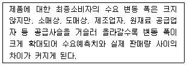
8. 제품/시장 확장그리드(product/market expansion grid)에서 기존제품을 가지고 새로운 세분시장을 파악해서 진출하는 방식의 기업성장전략으로 가장 옳은 것은?
9. 유통경로에서 발생하는 각종 힘(power)에 관한 설명으로 가장 옳지 않은 것은?
10. 윤리경영에서 이해관계자가 추구하는 가치이념과 취급해야 할 문제들이 옳게 나열되지 않은 것은?
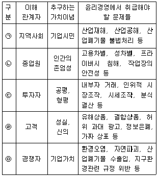
11. 아래 글상자에서 설명하는 유통의 형태로 가장 옳은 것은?
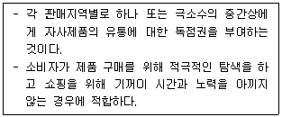
12. 유통산업이 합리화되는 경우에 나타나는 현상으로 가장 옳지 않은 것은?
13. 직무기술서와 직무명세서를 비교할 때 직무기술서에 해당되는 내용으로 가장 옳은 것은?
14. 유통경영전략의 수립단계를 순서대로 나열한 것으로 가장 옳은 것은?
15. 보관을 위한 각종 창고의 유형에 대한 설명으로 가장 옳지 않은 것은?
16. 아웃소싱을 실시하는 기업이 얻을 수 있는 장점으로 가장 옳지 않은 것은?
17. 아래 글상자가 설명하는 합작투자 유형으로 옳은 것은?
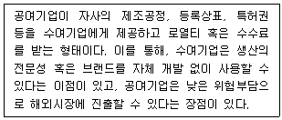
18. 아래 글상자가 설명하는 리더십의 유형으로 가장 옳은 것은?
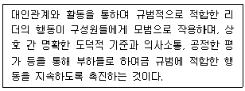
19. 제품에 대한 소유권을 갖고 제조업자로부터 제품을 취득하여 소매상에게 바로 운송하는 한정기능도매상으로 옳은 것은?
20. 대리도매상 중 판매대리인(selling agent)과 제조업자의 대리인(manufacture's agent)의 차이로 옳지 않은 것은?
21. 불공정 거래행위에 해당되지 않는 것은?
22. 샤인(Schein)이 제시한 조직 문화의 세 가지 수준에서 인식적 수준에 해당되는 것으로 가장 옳은 것은?
23. 공급업자 평가방법 중 각 평가 기준의 중요성을 정확하게 판단할 수 없는 경우에 유용한 평가방법은?
24. 소비자기본법(법률 제17799호, 2020.12.29., 타법개정)에 따라 국가가 광고의 내용이나 방법에 대한 기준을 제한할 수 있는 항목으로 옳지 않은 것은?
25. 상품을 품질수준에 따라 분류하거나 규격화함으로써 거래 및 물류를 원활하게 하는 유통의 기능으로 가장 옳은 것은?
2과목: 상권분석
26. 지리정보시스템(GIS)을 이용한 상권분석과 관련한 내용 으로 옳지 않은 것은?
27. 구조적 특성에 의해 상권을 분류할 때 포켓상권에 해당하는 것으로 옳은 것은?
28. 중심지체계나 주변환경 등에 의해 분류할 수 있는 상권의 유형에 대한 설명으로 가장 옳지 않은 것은?
29. 소매점포의 상권범위나 상권형태는 소매점포를 이용하는 소비자의 공간적 분포를 나타낸다. 이에 대한 설명으로 가장 옳지 않은 것은?
30. 상권 내의 경쟁점포 분석에 대한 설명으로 가장 옳지 않은 것은?
31. 크리스탈러(Christaller, W.)의 중심지이론에서 말하는 중심지 기능의 최대 도달거리(the range of goods and services)가 의미하는 것으로 가장 옳은 것은?
32. 상권 내 소비자의 소비패턴이나 공간이용실태 등을 조사하기 위해 표본조사를 실시할 때 사용할 수 있는 비확률표본추출 방법에 해당하는 것으로 가장 옳은 것은?
33. 상권의 질(質)에 대한 설명으로 가장 옳지 않은 것은?
34. 도심으로부터 새로운 교통로가 발달하면 교통로를 축으로 도매, 경공업 지구가 부채꼴 모양으로 확대된다는 공간구조이론으로 가장 옳은 것은?
35. 인구 9만명인 도시 A와 인구 1만명인 도시 B 사이의 거리는 20Km이다. 컨버스의 공식을 적용할 때 도시 B로부터 두 도시(A, B) 간 상권분기점까지의 거리로 옳은 것은?
36. 신규점포의 입지를 결정하는 과정에서 후보입지의 매력도 평가에 활용할 수 있는 회귀분석모형에 관한 설명으로 가장 옳지 않은 것은?
37. 상품 키오스크(merchandise kiosks)에 대한 설명으로서 가장 옳지 않은 것은?
38. 유통산업발전법(법률 제19117호, 2022.12.27., 타법개정)에서는 필요하다고 인정하는 경우 대형마트에 대한 영업시간 제한이나 의무휴업일 지정을 규정하고 있다. 그 내용으로 가장 옳은 것은?
39. 입지분석은 지역분석, 상권분석, 부지분석 등의 세 가지 수준에서 실시한다. 경쟁분석을 실시하는 분석수준으로서 가장 옳은 것은?
40. 업태에 따른 소매점포의 적절한 입지유형을 설명한 페터(R. M. Fetter)의 공간균배원리를 적용한 것으로 가장 옳지 않은 것은?
41. 소비자가 원하는 시간과 장소에서 상품을 구입할 수 있게 해야 한다는 의미에서의 상품에 대한 소비자들의 물류요구와 취급하는 소매점 숫자의 관계에 대한 기술로 가장 옳은 것은?
42. 점포개점을 위한 투자계획의 내용으로서 가장 옳지 않은 것은?
43. 도시상권의 매력도에 직접적으로 영향을 미치는 특성으로서 가장 옳지 않은 것은?
44. 상권분석의 주요한 목적으로 가장 옳지 않은 것은?
45. 상가건물 임대차보호법(법률 제18675호, 2022.1.4., 일부 개정) 등의 관련 법규에서는 아래 글상자와 같이 상가임대료의 인상률 상한을 규정하고 있다. 괄호 안에 들어갈 내용으로 옳은 것은?
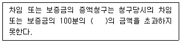
3과목: 유통마케팅
46. 통합적 마케팅커뮤니케이션(IMC: integrated marketing communication)에 대한 설명으로 가장 옳지 않은 것은?
47. 점포공간을 구성할 경우, 점포에서의 역할을 고려한 각각의 공간에 대한 설명으로 가장 옳지 않은 것은?
48. 마케팅믹스 요소인 4P 중 유통(place)을 구매자 관점인 4C로 표현한 것으로 가장 옳은 것은?
49. 온라인광고의 유형에 대한 설명으로 가장 옳지 않은 것은?
50. 브랜드 관리와 관련된 설명으로 가장 옳지 않은 것은?
51. 상품판매에 대한 설명으로 옳지 않은 것은?
52. 아래 글상자가 설명하는 머천다이징의 종류로 가장 옳은 것은?
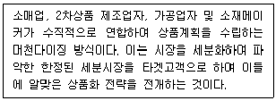
53. 판매서비스는 거래계약의 체결 또는 완결을 지원하는 거래지원서비스 및 구매 과정에서 고객이 지각하는 가치를 향상시키는 가치증진서비스로 구분할 수 있다. 가치증진서비스에 해당되는 것으로 가장 옳은 것은?
54. 전략과 연계하여 성과를 평가하기 위해 유통기업은 균형점수표(BSC: balanced score card)를 활용하기도 한다. 균형점수표의 균형(balanced)의 의미에 대한 설명으로서 가장 옳지 않은 것은?
55. 사람들은 신제품이나 혁신을 수용하고 구매하는 성향에서 큰 차이를 갖는다. 자신의 커뮤니티에서 여론주도자이며 신제품이나 혁신을 조기에 수용하지만 매우 신중하게 구매하는 집단으로 가장 옳은 것은?
56. 표적시장을 수정하거나 제품을 수정하거나 마케팅믹스를 수정하는 마케팅전략을 수행해야 하는 제품수명주기 상의 단계로서 가장 옳은 것은?
57. 중고품을 반납하고 신제품을 구매한 고객에게 가격을 할인해 주거나 판매촉진행사에 참여한 거래처에게 구매대금의 일부를 깎아주는 형식의 할인으로 가장 옳은 것은?
58. 카테고리 매니지먼트에 대한 설명으로 가장 옳지 않은 것은?
59. 아래 글상자의 성과측정 지표들 중 머천다이징에서 상품관리 성과를 측정하기 위한 지표들만을 나열한 것으로 옳은 것은?
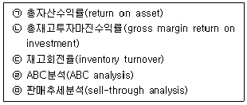
60. 유통경로에 대한 촉진 전략 중 푸시 전략에 해당하는 것으로 가장 옳지 않은 것은?
61. 아래 글상자에서 제품수명주기에 따른 광고 목표 중 도입기의 광고 목표와 관련된 광고만을 나열한 것으로 가장 옳은 것은?
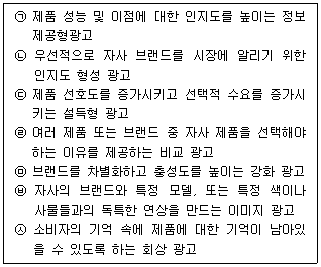
62. 기업과의 관계 진화과정에 따라 분류한 고객의 유형으로 가장 옳지 않은 것은?
63. '주스 한 잔에 00원' 등과 같이 오랫동안 소비자에게 정착되어 있는 가격을 지칭하는 용어로 가장 옳은 것은?
64. CRM 전략을 위한 데이터웨어하우스에 대한 설명으로 가장 옳은 것은?
65. 매장의 상품배치에 관한 제안으로 가장 옳지 않은 것은?
66. 고객 편리성을 높이기 위한 점포구성 방안으로서 가장 옳지 않은 것은?
67. CRM(customer relationship management) 실행 순서를 나열한 것으로 가장 옳은 것은?
68. 마케팅 조사에 대한 설명으로 가장 옳지 않은 것은?
69. 점포의 비주얼 머천다이징 요소로서 가장 옳지 않은 것은?
70. 상품진열에 대한 설명으로 가장 옳지 않은 것은?
4과목: 유통정보
71. 아래 글상자의 괄호 안에 들어갈 용어를 순서대로 바르게 나열한 것으로 가장 옳은 것은?
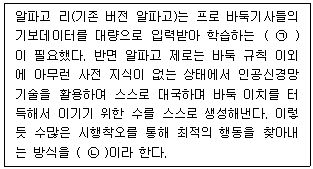
72. 드론의 구성요인에 대한 설명으로 가장 옳지 않은 것은?
73. 아래 글상자에서 설명하는 용어로 가장 옳은 것은?
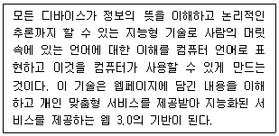
74. 공급사슬의 성과지표들 중 고객서비스의 신뢰성 지표로 가장 옳은 것은?
75. 지식경영에 대한 설명으로 가장 옳지 않은 것은?
76. 웹 2.0을 가능하게 하고 지원하는 기술에 대한 설명으로 가장 옳지 않은 것은?
77. 스튜워트(W. M. Stewart)가 주장하는 물류의 중요성이 강조되는 이유로 가장 옳지 않은 것은?
78. POS(point of sale)시스템 도입에 따른 장점으로 가장 옳지 않은 것은?
79. 빅데이터 분석 기술들 중 아래 글상자에서 설명하는 용어로 가장 옳은 것은?
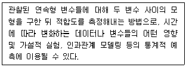
80. EDI(electronic data interchange)에 대한 설명으로 가장 옳지 않은 것은?
81. 유통정보혁명의 시대에서 유통업체의 경쟁우위 확보 방안으로 가장 옳지 않은 것은?
82. 유통정보시스템의 개념에 대한 설명으로 가장 옳지 않은 것은?
83. 지식관리시스템에 대한 설명으로 가장 옳지 않은 것은?
84. 아래 글상자의 괄호 안에 들어갈 용어가 순서대로 바르게 나열된 것은?
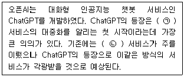
85. 바코드와 관련된 용어에 대한 설명으로 가장 옳지 않은 것은?
86. IoT(Internet of Things)에 대한 설명으로 가장 옳지 않은 것은?
87. 아래 글상자에서 설명하는 용어로 가장 옳은 것은?
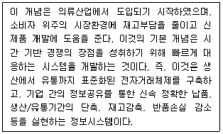
88. 스미스, 밀버그, 버크(Smith, Milberg, Burke)는 '개인정보 활용에 따른 프라이버시 침해 우려에 대한 연구'를 통해 개인의 프라이버시 침해 우려 프레임워크를 제시하였다. 이 경우 유통업체의 개인정보 활용 증대에 따라 소비자들에게 발생할 수 있는 프라이버시 침해 우려에 대한 설명으로 가장 옳지 않은 것은?
89. 빅데이터는 다양한 유형으로 존재하는 모든 데이터가 대상이 된다. 데이터 유형과 데이터 종류, 그에 따른 수집 기술의 연결이 가장 옳지 않은 것은?
90. 정부는 수산물의 건강한 유통을 위해 수산물 이력제를 시행하고 있다. 이에 대한 설명으로 가장 옳지 않은 것은?